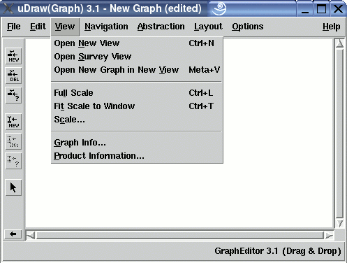

Manual
View Menu
The "View" menu contains operations for changing the user's view to the data: Opening multiple views to a graph, setting the scale of a visualization or getting information.
Note: menu operations can also be invoked without the mouse by using keyboard commands.
Multi-View Management
-
Open New View
This operation opens an additional view (base window) to the graph. Read more about multi-view and multi-graph in the concepts document. All views of a graph are coupled with each other, so interactions in one view affect the graph visualization in all the other views of the same graph, too. But loading a graph in one view disconnects this particular base window from the other views, so the new graph is only displayed in the view where the load operation was invoked. This way, the user can load many different graphs at a time (multi-graph). The maximal number of open base windows in uDraw(Graph) is 64. -
Open Survey View
This operation also opens an additional view to the graph, but with some special properties. Read more about multi-view in the concept document. The base window, where this operation was invoked, is called detail view. A survey view, which appears after using this operation, shows the graph in a reduced scale to see the whole structure at any time. The scale of a survey view reduced automatically when the window size is manipulated. A survey view shows the currently visible area of the corresponding detail view with a blue rectangle. This rectangle is only visible in a survey view when the scale is small enough to show the complete graph. So, if the blue rectangle has become invisible in a survey view, then use menu "View/Fit Scale to Window" (see below) to get the blue rectangle back. If the scale of the survey view is 100%, because the graph is small enough and already completely visible in the detail view, you will not see the rectangle as well. You can move the blue rectangle by holding the left mouse button in order to scroll in the corresponding detail view. Another useful feature of the survey view is automatic scrolling. When the user selects a node in the survey view, the same node is brought to the center in the corresponding detail view with animation. Scrolling to the selected node can be switched off in dialog Options/General Settings... by deselecting checkbox "On selection in Survey View". Animation can be switched off in dialog Options/General Settings... by selecting checkbox "No Animation". The maximal number of open base windows in uDraw(Graph) is 64.
Scaling
-
Full Scale
Used to set the graph visualization scale to 100%. -
Fit Scale to Window
Used to set the graph visualization scale to the maximal rate where the graph is completely visible in the base window. -
Scale...
Used to set the graph visualization scale to any rate between 1% and 100%. Read more about scaling in the concept document. After selecting this menu entry, a scale dialog window will appear to set the scale. In a reduced scale, all interactive operations are still available. The scale of a graph can only be reduced with this operation, but not magnified. To magnify a graph visualization, choose a bigger font with dialog Options/Layout Settings....
Getting Information
-
Graph Info...
This operation displays the graph info dialog to get statistic information about the currently visualized graph. -
Product Information...
This operation shows a dialog window with uDraw(Graph) product information.
Copyright © 2005, Universität Bremen. All rights reserved.